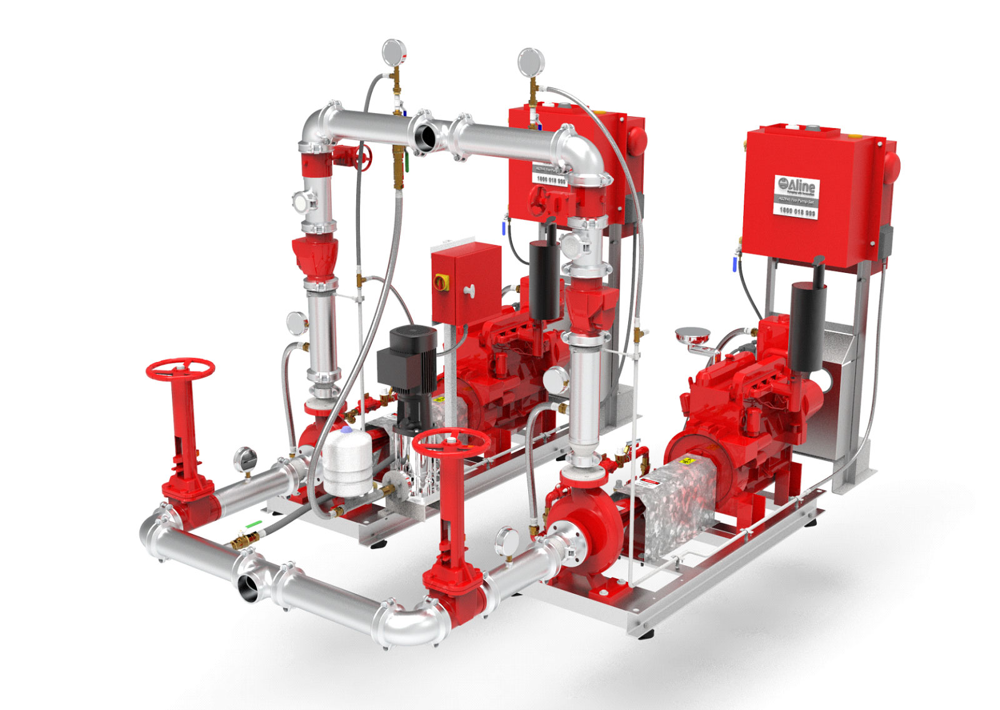

A sprinkler booster is an assembly that allows fire brigade vehicles to supplement a building’s sprinkler and hydrant systems with additional water flow and pressure during emergencies. In Australia, sprinkler boosters must comply with AS 2419.1 and AS 2118 series standards, ensuring they meet design, installation, and performance requirements for effective firefighting support.
Key Takeaways:
- AS 2419.1 governs the installation and design of hydrant booster assemblies, while the AS 2118 series covers automatic sprinkler systems, including boosters.
- Booster assemblies must be clearly visible, easily accessible, and capable of delivering required flow and pressure, ensuring fire brigade compatibility.
- Regular testing and maintenance are mandatory to ensure boosters remain compliant with Australian Standards and function correctly during a fire.
Sprinkler Booster System Requirements in Australia
Hydrant and sprinkler booster systems are regulated by the National Construction Code (NCC) and Australian Standards, primarily AS 2419.1 for hydrants and AS 2118 series for sprinklers. AS 2419.1-2021 details the design, installation, and commissioning requirements for booster assemblies, ensuring reliable water delivery in firefighting scenarios. Booster assemblies must:
- Be installed on a building’s façade or near main entrances for fire brigade access.
- Remain unobstructed and clearly marked for easy hose connection.
- Meet component specifications including isolation valves, pipework, and approved fittings.
For combined hydrant and sprinkler systems, boosters may be shared or separated based on system design and demand. Ongoing testing and maintenance as per AS 2419.1 ensure continual compliance and operational readiness.
Aline Pumps: AS 2419-Compliant Fire Sprinkler Booster Solutions
At Aline Pumps, we design and supply premium-grade booster pumps for ESFR sprinkler systems, ensuring compliance with AS 2419 and AS 2118 requirements. Our customisable packages include:
- Diesel or Electric fire pumps (air or water-cooled)
- Variable and fixed speed drive options
- Weatherproof enclosures and galvanised skid packages
- Knock-down configurations for limited space installations
We understand the hydraulic demands of high-rise and large-scale facilities. Whether you're sourcing water from a static supply or need to amplify mains pressure, Aline’s booster systems ensure your sprinkler installation meets code and performs reliably. We offer end-to-end support including installation, commissioning, and after-sales service.
Contact us today to discuss your sprinkler booster pump needs and receive a tailored project proposal.